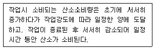
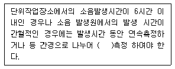
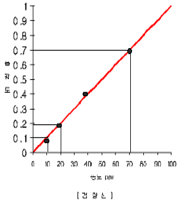
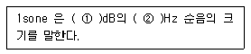
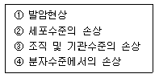
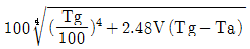

산업위생관리기사 (2008-05-11 기출문제)
1과목: 산업위생학개론
1. 작업대사율(RMR)이 6인 작업에서의 실동율(實動率)은 얼마인가? (단, 사이또와 오시마의 식을 적용한다.)
- 45%
- 55%
- 65%
- 75%
(정답률: 81%)

2. 다음 중 작업대사량에 따른 작업강도의 구분에 있어서 중등도 작업(moderate work)에 해당하는 것은?
- 150kcal/h 소요되는 작업
- 300kcal/h 소요되는 작업
- 450kcal/h 소요되는 작업
- 500kcal/h 이상 소요되는 작업
(정답률: 87%)
3. 육체적 작업능력(PWC)이 15kcal/min인 근로자가 1일 8시간동안 물체를 운반하고 있다. 이 때의 작업대사량은 8kcal/min 이고, 휴식시 대사량은 3kcal/min 이라면, 매시간당 휴식시간과 작업시간으로 가장 적절한 것은? (단, Hertig식을 적용한다.)
- 휴식시간은 28분, 작업시간은 32분이다.
- 휴식시간은 30분, 작업시간은 30분이다.
- 휴식시간은 32분, 작업시간은 28분이다.
- 휴식시간은 36분, 작업시간은 24분이다.
(정답률: 80%)
4. 다음 중 산업안전보건법상 검정대상 보호구가 아닌 것은?
- 귀덮개
- 보안면
- 안전조끼
- 방진마스크
(정답률: 84%)
5. 국소피로의 평가를 위하여 근전도(EMG)를 측정하였다. 피로한 근육이 정상 근육에 비하여 나타내는 근전도상의 차이를 설명한 것으로 틀린 것은?
- 총전압이 감소한다.
- 평균주파수가 감소한다.
- 저주파수(0~40Hz)에서 힘이 증가한다.
- 고주파수(40~200Hz)에서 힘이 감소한다.
(정답률: 86%)
6. 다음 내용이 설명하는 것은 ?

- 산소 부채
- 산소 섭취량
- 산소 부족량
- 최대 산소량
(정답률: 96%)
7. 다음 중 근육 노동시 특히 보급해 주어야 하는 비타민의 종류는?
- 비타민 A
- 비타민 B1
- 비타민 C
- 비타민 D
(정답률: 83%)
8. 산업안전보건법상 타인의 의뢰에 의한 산업 위생지도사의 직무에 해당하지 않는 것은?
- 작업환경의 평가 및 개선지도
- 산업위생에 관한 조사 및 연구
- 유해· 위험의 방지대책에 관한 평가· 지도
- 작업환경개선과 관련된 계획서 및 보고서 작성
(정답률: 48%)
9. 어떤 작업장에서 TCE의 농도를 측정하여 다음과 같은 [데이터]를 얻었다. 이들이 대수정규분포를 한다고 할 때 기하평균(GM)은 약 몇 ppm 인가? [데이터] 30, 33, 40, 80, 150 (단위 : ppm)
- 50.7
- 54.4
- 60.3
- 66.6
(정답률: 74%)
10. 다음 중 근골격계 질환의 특징으로 볼 수 없는 것은?
- 자각증상으로 시작된다.
- 관리의 목표는 최소화에 있다.
- 손상의 정도를 측정하기 어렵다.
- 환자의 발생에 집단적으로 발생하지 않는다.
(정답률: 77%)
11. 산업안전보건법에 따라 사업주가 허가대상 유해물질을 제조하거나 사용하는 작업장의 보기 쉬운 장소에 반드시 게시하여야 하는 내용이 아닌 것은?
- 제조 날짜
- 취급상의 주의사항
- 인체에 미치는 영향
- 착용하여야 할 보호구
(정답률: 76%)
12. 작업대사율(RMR, Relative Metabolic Rate)에 관한 식으로 틀린 것은?
- 작업대사량/기초대사량
- 안정시대사량-기초대사량/기초 대사량
- 작업시소요열량-안정시산소소비량/기초대사량
- 작업시산소소비량-안정시산소소비량/기초대사시산소소비량
(정답률: 64%)
13. 다음 중 허용농도(TLV) 적용상의 주의사항으로 거리가 먼 것은?
- 대기오염 평가 및 관리에 적용해야 한다.
- 산업위생전문가에 의하여 적용되어야 한다
- 안전농도와 위험농도를 정확히 구분하는 경계선은 아니다.
- 24시간 노출 또는 정상 작업시간을 초과한 노출에 대한 독성평가에는 적용될 수 없다.
(정답률: 76%)
14. 다음 중 허용농도를 설정할 때 가장 중요 한 자료는?
- 사업장에서 조사한 역학자료
- 인체실험을 통해 얻은 실험자료
- 동물실험을 통해 얻은 실험자료
- 유사한 사업장의 비용편익분석 자료
(정답률: 70%)
15. 온도 25℃, 1기압하에서 분당 100mL 씩 60분동안 채취한 공기 중에서 벤젠이 3mg 검출되었다. 검출된 벤젠은 약 몇 ppm인가? (단, 벤젠의 분자량은 78이다.)
- 11
- 15.7
- 111
- 157
(정답률: 64%)
16. 근로자가 10000명인 사업장에서 1년 동안 재해가 50건 발생하였고, 손실된 작업일수가 200일이었다. 이 때의 강도율은 얼마인가?(오류 신고가 접수된 문제입니다. 반드시 정답과 해설을 확인하시기 바랍니다.)
- 4
- 20
- 40
- 80
(정답률: 55%)
17. 다음 중 최대작업영역(maxium working area)에 대한 설명으로 가장 적절한 것은?
- 팔을 위 방향으로만 움직이는 경우에 그려지는 작업영역
- 양팔을 곧게 폈을 때 도달할 수 있는 최대 영역
- 팔을 아래 방향으로만 움직이는 경우에 그려지는 작업영역
- 팔을 가볍게 몸체에 붙이고 팔꿈치를 구부린 상태에서 자유롭게 손이 닿는 영역
(정답률: 87%)
18. 메탄올(TLV =200ppm)이 존재하는 작업환경에서 1주일에 45시간을 작업할 경우 보정된 허용농도는 약 얼마인가? (단,Brief와Scala의 보정방법을 적용한다.)
- 100ppm
- 123ppm
- 156ppm
- 171ppm
(정답률: 50%)
19. 다음 중 작업을 마친 직후 회복기의 심박수를 측정한 결과 심한 전신피로 상태라 판단될 수 있는 경우는?
- HR 30~60이 100 미만이고, HR 60~90과 HR 150~160의 차이가 20 이상인 경우
- HR 30~60이 100 초과하고, HR 60~90과 HR 150~180의 차이가 20 미만인 경우
- HR 30~60이 110 미만이고, HR 60~90과 HR 150~180의 차이가 10 이상인 경우
- HR 30~60이 110 초과하고, HR 60~90과 HR 150~180의 차이가 10 미만인 경우
(정답률: 86%)
20. 현재 총 흡음량이 1200sabins 인 작업장의 천장에 흡음물질을 첨가하여 2400sabins 을 추가할 경우 예측되는 소음감음량(NR)은 약 몇 dB 인가?
- 2.6
- 3.5
- 4.8
- 5.2
(정답률: 73%)
2과목: 작업위생측정 및 평가
21. 어떤 음의 발생원의 Sound Power 가 0.0⑤W 이면 이때 음력수준은?
- 95dB
- 96dB
- 97dB
- 98dB
(정답률: 67%)
22. 유량, 측정시간, 회수율 및 분석에 의한 오차가 각각 15, 3, 9, 5% 일 때 누적 오차는?
- 18.4%
- 21.6%
- 24.2%
- 27.8%
(정답률: 58%)
23. 어느 작업장에서 sampler를 사용하여 분진 농도를 측정한 결과 sampling 전 후의 filter 무게가 각각 20.3mg, 24.6mg을 얻었다. 이때 pump의 유량은 45L/min이었으며 480분 동안 시료를 채취하였다면 분진 농도는?
- 167㎍/m3
- 199㎍/m3
- 243㎍/m3
- 289㎍/m3
(정답률: 42%)
24. 분광광도계(흡광광도계)를 사용할 때 근적 외부 영역에 주로 사용되는 광원은?
- 텅스텐램프
- 중수소방전관
- 중공음극램프
- 광전자증배관
(정답률: 65%)
25. 흡착제에 관한 설명으로 틀린 것은?
- 활성탄 : 탄소 함유 물질을 탄화 및 활성화하여 만든, 흡착능력이 큰 무정형 탄소의 일종이다.
- 다공성 중합체 : 활성탄보다 반응할 수 있는표면적이 넓어 선택적 분석이 가능 하다.
- 분자체 : 탄소분자체는 합성다중체나 석유타르전구체의 무산소열분해로 만들어지는 구형의 다공성구조를 가지고 있다.
- 실리카겔 : 규산나트륨과 황산과의 반응에서 유도된 무정형의 결정체이다.
(정답률: 63%)
26. 0.02M NaOH 용액 500mL를 준비하는데 Na0H는 몇 g이 필요한가? (단, Na의 원자량은 23)
- 0.2
- 0.4
- 0.8
- 1.6
(정답률: 48%)
27. 다음은 작업환경측정방법 중 소음측정시간 및 횟수에 관한 내용이다. ()안에 알맞은 것은?

- 2회 이상
- 3회 이상
- 4회 이상
- 6회 이상
(정답률: 70%)
28. 유기용제인 trichloroethylene의 근로자 노출농도를 측정하고자 한다. 과거의 노출 농도를 조사해 본 결과 평균 30ppm이었으며 활성탄관(100㎎/50㎎)을 이용하여 0.15ℓ/분으로 채취하였다. trichloroethylene의 분자량은 131.39이고 가스크로마토그래피의 정량한계는 시료당 0.5㎎이라면 채취해야 할 최소한의 시간은? (단, 1기압, 25℃ 기준)
- 10분
- 14분
- 18분
- 21분
(정답률: 48%)
29. 어느 자료로 대수정규누적분포도를 그렸을때 누적퍼센트 84.1%에 해당 되는 값이 3.75이고 기하 표준편차가 1.5라면 기하평균은?
- 0.4
- 5.3
- 5.6
- 2.5
(정답률: 48%)
30. 먼지 채취시 사이클론이 충돌기에 비해 갖는 장점이라 볼 수 없는 것은?
- 사용이 간편하고 경제적이다.
- 호흡성 먼지에 대한 자료를 쉽게 얻을 수 있다.
- 입자의 질량 크기 분포를 얻을 수 있다.
- 매체의 코팅과 같은 별도의 특별한 처리가 필요 없다.
(정답률: 34%)
31. 어떤 시료용액의 흡광도를 측정하였더니 흡광도가 검량선의 바깥 영역이었다. 이를 정확히 측정하기 위해 시료용액을 3배로 희석 하여 흡광도를 측정한 결과 흡광도가 0.4였다면 이 시료용액의 농도는?

- 40ppm
- 80ppm
- 100ppm
- 120ppm
(정답률: 47%)
32. 활성탄관(charcoal tubes)을 사용하여 포집하기에 가장 부적합한 오염물질은?
- 할로겐화 탄화수소류
- 에스테르류
- 방향족 탄화수소류
- 니트로 벤젠류
(정답률: 58%)
33. 금속 도장 작업장의 공기 중에 toluene (TLV=100ppm)45ppm, MIBK(TLV=50ppm)15ppm, Acetone(TLV=750ppm),280ppm, MEK(TLV=200ppm)80ppm 으로 발생되었을 때 이 작업장 환경의 노출기준은? (단, 상가 작용 기준)
- 263ppm
- 276ppm
- 289ppm
- 291ppm
(정답률: 80%)
34. PVC 막 여과지에 관한 설명과 가장 거리가 먼 내용은?
- 유리규산을 채취하여 X-선 회질법으로 분석하는데 적절하다.
- 6가크롬, 아연산화물의 채취에 이용한다.
- 수분에 대한 영향이 크지 않다.
- 중량분석에는 부정확하여 이용되지 않는다.
(정답률: 67%)
35. 가스상 물질을 측정하기 위한 ‘순간시료 채취방법을 사용 할 수 없는 경우’ 와 가장 거리가 먼 것은?
- 유해물질의 농도가 시간에 따라 변할 때
- 작업장의 기류속도가 지적속도 이하 일 때
- 시간 가중 평균치를 구하고자 할 때
- 공기 중 유해물질의 농도가 낮을 때 (유해물질이 농축되는 효과가 없기 때문에 검출기의 검출한계보다 공기 중 농도가 높아야 한다.)
(정답률: 57%)
36. 직경이 5㎛, 비중이 3.6인 A물질의 침강속도는?
- 0.42cm/sec
- 0.35cm/sec
- 0.27cm/sec
- 0.18cm/sec
(정답률: 68%)
37. 수은(알킬수은제외)의 노출기준은 0.⑤mg/m3이고 증기압은 0.0018mmHg인 경우, VHR(vapor hazard ratio)는? (단, 25℃, 1기압 기준, 수은 원자량 200.59)
- 389
- 432
- 512
- 613
(정답률: 60%)
38. 공기채취기구의 보정에 사용되는 1차 표준기구는?
- 열선기류계
- 습식테스트미터
- 오리피스미터
- 흑연피스톤미터
(정답률: 73%)
39. 직경이 7.5 센티미터인 흑구 온도계의 측정시간 기준은?
- 5분 이상
- 10분 이상
- 15분 이상
- 25분 이상
(정답률: 48%)
40. 측정방법의 정밀도를 평가하는 변이계수 (coefficient of variation, CV)를 알맞게 나타낸 것은?
- 표준편차/평균치
- 평균치/표준편차
- 표준오차/표준편차
- 표준편차/표준오차
(정답률: 79%)
3과목: 작업환경관리대책
41. 최근에너지 절약의 일환으로 난방이나 냉방을 실시할 때 외부공기를 100% 공급하지 않고 실내공기를 재순환 시켜 외부공기와 혼합하여 공급한다. 재순환 공기 중 CO2 농도는 550ppm 이었다. 급기 중 외부공기의 함량(%)은? (단, 외부공기의 CO2 농도는 330ppm, 급기는 재순환공기와 외부공기가 혼합된 공기)
- 23.8%
- 35.4%
- 47.6%
- 52.3%
(정답률: 38%)
42. 푸쉬-풀 후드에 관한 설명으로 틀린 것은?
- 도금조와 같이 폭이 좁은 경우에 사용하면 포집효율과 필요유량을 증가시킬 수 있다.
- 공정에서 작업물체를 처리조에 넣거나 꺼내는 중에 공기막이 파괴도어 오염물질이 발생하는 단점이 있다.
- 제어속도는 푸쉬 제트기류에 의해 발생한다.
- 노즐의 각도는 제트공기가 방해받지 않도록 하향방향을 햐앟고 최도 20°내를 유지하도록 한다.
(정답률: 42%)
43. 일반적으로 다음의 양압, 음압 호흡기보호구 중 할당보호계수(APF)가 가장 큰 것은? (단, 기능별, 형태별 분류 기준)
- 양압 호흡기보호구-전동 공기정화식(에어라인,압력식(개방/폐쇄식))-반면형
- 양압 호흡기보호구-공기공급식(SCBA, 압력식(개방/폐쇄식))-전면형
- 음압 호흡기보호구-전동 공기공급식(에어라인,압력식(개방/폐쇅식))-전면형
- 음압 호흡기보호구-공기정화식(에어라인(폐쇄식))-헬멧형
(정답률: 47%)
44. 방독마스크를 효과적으로 사용할 수 있는 작업으로 가장 적절한 것은?
- 오래 방치된 우물 속의 작업
- 맨홀 작업
- 오래 방치된 정화조 내 작업
- 유해물질 중독 위험작업
(정답률: 72%)
45. 어떤 작업장의 음압수준이 90dB이고, 근로자는 귀덮개(NRR=21)를 착용하고 있다. 미국OSHA계산방법으로 계산된 차음효과와 근로자가 노출되는 음압수준은? (단, NRR(noise reduction rating);차음평가수)
- 차음효과 5dB, 음압수준 85dB
- 차음효과 6dB, 음압수준 84dB
- 차음효과 7dB, 음압수준 83dB
- 차음효과 8dB, 음압수준 82dB
(정답률: 72%)
46. 송풍기의 풍량, 풍압, 동력과 회전수와의 관계를 바르게 설명한 것은?
- 풍량은 회전수에 비례한다.
- 풍압은 회전수의 제곱에 반비례한다.
- 동력은 회전수의 제곱에 반비례한다.
- 동력은 회전수의 제곱에 비례한다.
(정답률: 72%)
47. 풍량 4m3/sec, 송풍기 유효전압 100mmH2O, 송풍기의 효율이 75%인 송풍기의 소요동력은?
- 2.2 kW
- 3.6 kW
- 4.4 kW
- 5.2 kW
(정답률: 52%)
48. 20℃의 송풍관 내부에 520m/분으로 공기가 흐르고 있을 때 속도압은? (단, 0℃ 공기 밀도는 1.296kg/m3이다.)
- 7.5 mmH2O
- 6.8 mmH2O
- 5.2 mmH2O
- 4.6 mmH2O
(정답률: 46%)
49. 흡입관의 정압과 속도압이 각각-40.5mmH2O 7.2mmH2O이고, 배출관의 정압과 속도압이 각각 20.0mmH2O, mmH2O이면 송풍기의 유효전압은?
- 45.6 mmH2O
- 54.2 mmH2O
- 68.3 mmH2O
- 72.1 mmH2O
(정답률: 45%)
50. 작업대 위에서 용접을 할 대 흄을 포집 제거하기 위해 작업면에 고정된 플렌지가 붙은 외부식 장방형 후드를 설치했다. 개구면에서 포촉점 까지의 거리는 0.25m, 제어속도는 0.75m/sec, 후드 개구면적이 0.5m2일 때 소요 송풍량은?
- 약 20 m3/min
- 약 25 m3/min
- 약 30 m3/min
- 약 35 m3/min
(정답률: 63%)
51. 원심력송풍기 중 ‘방상 날개형 송풍기’에 관한 설명으로 틀린 것은?
- 플레이트 송풍기 또는 평판형 송풍기라 한다.
- 견고하고 가격이 저렴하며 효율이 높다.
- 깃의 구조가 분진을 자체정화할 수 있도록 되어 있다.
- 고농도 분진함유 공기나 부식성이 강한 공기를 이송시키는 데 많이 이용된다.
(정답률: 60%)
52. 다음 중 전체환기장치를 설치하기에 적당하지 않은 것은?
- 독성이 낮을 때
- 발생원이 이동성일 때
- 발생량이 많거나 일정할 때
- 발생원이 분산되어 있을 때
(정답률: 76%)
53. 어떤 작업장에서 메틸알코올(비중 0.792, 분자량 32.04)이 시간당 1.0ℓ증발되어 공기를 오염시키고 있다. 여유계수 K 값은 6이고, 허용기준 TLV는 200ppm이라면 이 작업장을 전체환기시키는데 요구되는 필요환기량은 ? (단, 1기압, 21℃ 기준)
- 298 m3/min
- 395 m3/min
- 428 m3/min
- 552 m3/min
(정답률: 48%)
54. 작업환경관리대책의 원칙 중 대치(물질)에 의한 개선으 예로 틀린 것은?
- 분체 입자: 작은 입자로 대치
- 야광시계: 자판을 라듐에서 인으로 대치
- 샌드브라스트: 모래를 대신하여 철가루 사용
- 단열재: 석면 대신 유리섬유나 암면을 사용
(정답률: 66%)
55. 건조로에서 접착제를 건조 할 때 톨루엔(비중 0.87, 분자량 92)이 1시간에 2kg씩 증발한다. 이 때 톨루엔의 LEL은 1.3%이며, LEL의 20%이하의 농도로 유지하고자한다. 화재 또는 폭발방지를 위해서 필요한 환기량은? (단, 표준상태는 21℃, 1기압이며 공정온도는 150℃이고 실제 온도보정에 따른 환기량은 구함)
- 약 329 m3/h
- 약 372 m3/h
- 약 414 m3/h
- 약 446 m3/h
(정답률: 29%)
56. 덕트 직경이 15cm이고, 공기 유속이 10m/s일 때 Reynold수는? (단, 공기 점성계수는1.8 X10-5 kg/secㆍm이고, 공기밀도는 1.2kg/m3이다.)
- 100,000
- 200,000
- 300,000
- 400,000
(정답률: 72%)
57. 직경이 400mm인 환기시설을 통해서 100m3/min의 표준상태의 공기를 보낼 대 이 덕트 내의 유속(m/sec)은?
- 13.3 m/sec
- 15.5 m/sec
- 17.4 m/sec
- 19.2 m/sec
(정답률: 50%)
58. 보호장구의 재질과 적용 물질에 대한 내용으로 틀린 것은?
- Butyl 고무- 극성 용제에 효과적이다.
- 면- 용제에는 사용하지 못 한다.
- 천연고무- 비극성 용제에 효과적이다.
- 가죽- 용제에는 사용하지 못한다.
(정답률: 56%)
59. 환기시스템에서 공기유량(Q)이 0.15m3/sec, 덕트 직영이 10.0cm, 후드 유입손실계수 (Fh)가 0.4일 때 후드정압(SPh)은? (단, 공기밀도 1.2kg/m3 기준)
- 약 13 mmH2O
- 약 24 mmH2O
- 약 31 mmH2O
- 약 42 mmH2O
(정답률: 60%)
60. 국소환기시설 설계(총압력손실계산)에 있어 ‘정압조절평형법’의 장점이 아닌 것은?
- 예기치 않은 침식 및 부식이나 퇴적문제가 일어나지 않는다.
- 유속의 범위가 적절히 선택되면 덕트의 폐쇄가 일어나지 않는다.
- 설계시 잘못 설계된 분지관 또는 저항이 제일 큰 분지관을 쉽게 발견할 수 있다.
- 설치된 시설의 개조가 용이하여 장치변경이나 확장에 대한 유연성이 크다.
(정답률: 57%)
4과목: 물리적유해인자관리
61. 다음 중 동상(Frostbite)에 관한 설명으로 가장 거리가 먼 것은?
- 피부의 동결은 -2~0℃에서 발생한다.
- 제2도 동상은 수포를 가진 광범위한 삼출성 염증을 유발시킨다.
- 동상에 대한 저항은 개인차가 있으며 일반적으로 발가락은 6℃에 도달하면 아픔을 느낀다.
- 직접적인 동결 이외에 한랭과 습기 또는 물에 지속적으로 접촉함으로 발생되며 국소산소결핍이 원인이다.
(정답률: 62%)
62. 다음 ( ) 안의 ①, ②에 알맞은 숫자로 나열된 것은?

- ① : 70 ② : 1000
- ① : 40 ② : 1000
- ① : 70 ② : 4000
- ① : 40 ② : 4000
(정답률: 71%)
63. 다음 중 빛과 밝기의 단위에 관한 내용으로 옳은 것은?
- 촉광 : 지름이 10cm 되는 촛불이 수평방향으로 비칠 대으 빛의 광동
- Lumen : 1촉광의 광원으로부터 1m 거리에 1m2 면적에 투사되는 빛의 량
- Lux : 1cd의 점광원으로부터 1m 떨어진 곳에 있는 광선의 수직인 면의 조명도
- Foot-candle : 1촉광의 빛이 1in제곱의 평면상에 수평방향으로 비칠 대의 그 평면의 빛의 밝기
(정답률: 37%)
64. 6N/m2의 음압는 약 몇 dB의 음압수준인가?
- 90
- 100
- 110
- 120
(정답률: 67%)
65. 전리방사선이 인체에 조사되면 [보기]와 같은 생체 구성성분의 손상을 일으키게 되는데 그 손상이 일어나는 순서를 올바르게 나열한 것은?

- ④→②→③→①
- ④→③→②→②
- ②→④→③→①
- ②→③→④→①
(정답률: 66%)
66. 전리방사선의 단위 중 조직(또는 물질)의 단위질량당 흡수된 에너지를 나타내는 것은?
- Gy (Gray)
- R (Rontgen)
- Sv (Sivert)
- Bq (Becquerel)
(정답률: 41%)
67. 다음 중 태양광선이 내리쬐지 않는 장소에서 습구흑구온도지수(WBGT)를 구하려고 할때 적용되는 식은? (단, Tw : 자연습구온도, Tg : 흑구온도, Ta : 건구온도, V : 기류속도이다.)
- 0.7Tw+0.3Tg
- 0.7Tw+0.2Tg+0.1Ta
- 0.72(Ta+Tw)+40.6℃

(정답률: 88%)
68. 다음 중 급격한 감압에 의하여 혈액 내에서 기포를 형성, 신체적 이상을 초래하는 물질은?
- 산소
- 수소
- 질소
- 이산화탄소
(정답률: 79%)
69. 다음 중 레이노 현상과 관련이 있는 것은?
- 진동
- 고온
- 소음
- 전리방사선
(정답률: 77%)
70. 다음 중 자외선에 관한 설명으로 틀린 것은?
- 비전리 방사선이다.
- 생체반응으로 적혈구, 백혈구에 영향을 미친다.
- 290nm이하의 자외선은 망막까지 도달한다.
- 280~315nm의 자외선을 도르노선(Dornoray)라고 한다.
(정답률: 69%)
71. 다음 중 진동에 의한 생체반응에 관계하는 4인자와 가장 거리가 먼 것은?
- 방향
- 노출시간
- 개인감응도
- 진동의 강도
(정답률: 61%)
72. 소음성 난청 중 청력장해(C5-dip)가 가장 심해지는 소음의 주파수는?
- 2000 Hz
- 4000 Hz
- 6000 Hz
- 8000 Hz
(정답률: 82%)
73. 다음 중 전리방사선의 영향에 대하여감수성이 가장 큰 인체 내의 기관은?
- 폐
- 혈관
- 근육
- 골수
(정답률: 79%)
74. 다음 중 적외선의 생체작용으로 가장 거리가 먼 것은?
- 초자공 백내장
- 눈의 각막 손상
- 화학적 색소 침착
- 뇌막 자극으로 경련을 동반한 열사병
(정답률: 45%)
75. 다음 중 전신진동에 대한 설명으로 틀린 것은?
- 전신진동으 경우 4~12Hz에서 가장 민감해진다.
- 산소소비량은 전신진동으로 증가되고, 폐환기도 촉진된다.
- 전신진동의 영향이나 장애는 자율신경 특히 순환기에 크게 나타나다.
- 두부와 견부는 50~60Hz 진동에 공명하고, 안구는 10~20Hz 진동에 공명한다.
(정답률: 73%)
76. 다음 중 열경련의 치료 방법으로 가장 적절한 것은?
- 5% 포도당 공급
- 수분 및 NaCl 보충
- 체온의 급속한 냉각
- 더운 커피 또는 강심제의 투여
(정답률: 74%)
77. 다음 중 비전리 방사선이 아닌 것은?
- 적외선
- 중성자
- 라디오파
- 레이저
(정답률: 62%)
78. 작업장에서 음원 A, B, C 에 대하여 각각 100dB, 90dB, 80dB 의 소음이 동시에 발생될 때 음압레벨의 평균값은 약 몇 dB인가?
- 86
- 91
- 96
- 101
(정답률: 30%)
79. 다음 중 마이크로파에 관한 설명으로 틀린 것은?
- 주파수의 범위는 10~30000MHz 정동이다.
- 혈액의 변화로는 백혈구의 감소, 혈소판의 증가 등이 나타난다.
- 백내장을 일으킬 수 있으며 이것은 조직온도의 상승과 관계가 있다.
- 중추신경에 대하여는 300~1200MHz의 주파수 범위에서 가장 민감하다.
(정답률: 30%)
80. 다음 중 저온환경에서 나타나는 생리적 반응으로 틀린 것은?
- 호흡의 증가
- 화학적 대사작용의 증가
- 피부혈관의 수축
- 근육긴장의 증가와 떨림
(정답률: 53%)
5과목: 산업독성학
81. 다음 중 만성장해로서 조혈장해를 가장 잘 유발시키는 것은?
- 벤젠
- 톨루엔
- 크실렌
- 에틸벤젠
(정답률: 75%)
82. 다음 중 국제암연구위원회(IARC)의 발암물질에 대한 Group의 구분과 정의가 올바르게 연결된 것은?
- Group 1 - 인체 발암성 가능 물질
- Group 2A - 인체 발암성 예측 추정 물질
- Group 3 - 인체 미발암성 추정 물질
- Group 4 - 인체 발암성 미분류 물질
(정답률: 39%)
83. 다음 중 독성실험에 관한 용어의 설명으로 틀린 것은?
- LD50 : 시험동물군의 50% 가 일정기간 동안에 죽는 치사량
- LC50 : 흡입시험인 경우 시험동물군의 50%를 죽게 하는 독성물질의 농도
- TD50 : 실험동물군의 50%가 살아 남을 수 있는 독성물질의 최대 농도
- ED50 : 실험동물군의 50%가 관찰 가능한 가역적인 반응을 나타내는 양
(정답률: 58%)
84. 다음 중 유병율과 발생율에 관한 설명으로 틀린 것은?
- 유병율은 발생율과는 달리 시간개념이 적다.
- 발생율은 조사 시점 이전에 이미 직업성 질병에 걸린 사람도 포함하여 산출한다.
- 발생율은 위험에 노출된 인구 중 질병에 걸릴 확률의 개념이다.
- 유병율은 어떤 시점에서 인구집단 내에 존재하던 환자의 비례적인 분율 개념이다.
(정답률: 68%)
85. 다음 중 생물학적 모니터링의 방법에서 생물학적 결정인자로 보기 어려운 것은?
- 체액의 화학물질 또는 그 대사산물
- 표적조직에 작용하는 활성 화학물질의 양
- 건강상의 영향을 초래하지 않은 부위나 조직
- 처음으로 접촉하는 부위에 직접 독성영향을 야기하는 물질
(정답률: 46%)
86. 다음 중 진폐증 발생에 관여하는 인자와 가장 거리가 먼 것은?
- 분진의 노출기간
- 분진의 분자량
- 분진의 농도
- 분진의 크기
(정답률: 70%)
87. 다음의 단순 에스테르 중에서 독성이 가장 놓은 물질은?
- 초산염
- 개미산염
- 부틸산염
- 프로피온산염
(정답률: 72%)
88. 급성중독시 우유과 계란의 흰자를 먹여 단백질과 해당물질을 결합시켜 침전시키거나, BAL(dimercaprol)을 근육주사로 투여하여야 하는 물질은?
- 납
- 크롬
- 수은
- 카드뮴
(정답률: 85%)
89. 다음 중 크실렌의 생물학적 노출지표로 이용되는 대사산물은? (단, 소변에 의한 측정기준이다.)
- 페놀
- 마뇨산
- 만델린산
- 메틸마뇨산
(정답률: 56%)
90. 대상먼지와 침강속도가 같고, 밀도가 1 이며 구형인 먼지의 직경으로 환산하여 표현하는 입자상 물질의 직경을 무엇이라 하는가?
- 입체적 직경
- 등면적 직경
- 기하학적 직경
- 공기역학적 직경
(정답률: 65%)
91. 장기간 노출될 경우 간 조직세포에 섬유화 증상이 나타나고, 특징적인 악성변화로 간에 혈관육종(hemangio-sarcoma)을 일으키는 물질은?
- 염화비닐
- 삼염화에틸렌
- 사염화에틸렌
- 메틸클로로포름
(정답률: 64%)
92. 다음 중 염료나 플라스틱 산업 등에서 노출되어 강력한 방광암을 일으키는 발암물질은?
- 납
- 벤젠
- 수은
- 벤지딘
(정답률: 68%)
93. 어떤 물질의 독성에 관한 인체실험 결과 안전 흡수량이 체중 kg 당 0.1mg 이었다. 체중이 50kg 인 근로자가 1일 8시간 작업할 경우 이 물질의 체내 흡수를 안전 흡수량이하로 유지하려면 공기 중 농도를 몇mg/m3 이하로 하여야 하는가? (단, 작업시 폐환기율은 1.25m3/h, 체내 잔류율은 1.0으로 한다.)
- 0.5
- 1.0
- 1.5
- 2.0
(정답률: 61%)
94. 다음 중 질식제에 속하지 않는 것은?
- 황화수고
- 일산화탄소
- 이산화탄소
- 질소산화물
(정답률: 54%)
95. 진폐증의 종류 중 무기성 분진에 의한 것은?
- 면페증
- 석면폐증
- 농부폐증
- 목재분진 폐증
(정답률: 75%)
96. 다음 중 납이 체내에 흡수됨으로서 초래되는 현상이 아닌 것은?
- 혈색소량 저하
- 망상적혈구수 증가
- 혈청내 철 감소
- 뇨 중 코프로폴피린 증가
(정답률: 74%)
97. 급성중독의 특징으로 심함 신장장해를 일으켜 과뇨증이 오며, 더 진전되면 무뇨증을 일으켜 요독증으로 사망을 초래하게 되는 물질은?
- 크롬
- 수은
- 망간
- 카드뮴
(정답률: 34%)
98. 다음 중 카드뮴의 만성중독 증상에 속하지 않는 것은?
- 폐기종
- 단백뇨
- 칼슘 배설
- 파킨슨씨증후군
(정답률: 66%)
99. Habor의 법칙에서 유해물질지수는 노출시간과 무엇의 곱으로 나타내는가?
- 상수(Constant)
- 용량(Capacity)
- 천정치(Ceiling)
- 농도(Concentration)
(정답률: 60%)
100. 인체내에서 독성물질 간의 상호작용 중 그 성격이 다른 것은?
- 상가작용(addition)
- 상승작용(synergism)
- 길항작용(antagonism)
- 가승작용(potentiation)
(정답률: 87%)